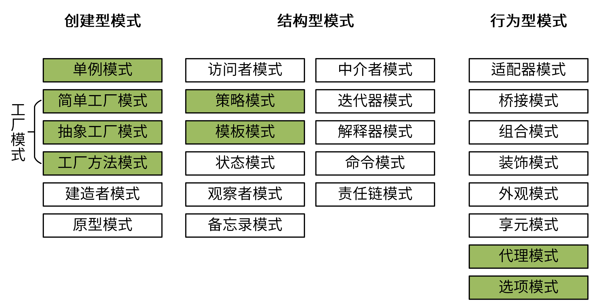
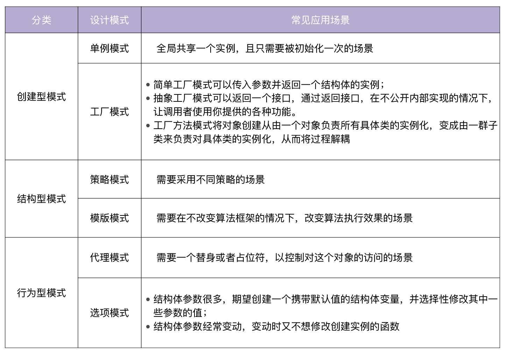

- 00 开篇词 从 0 开始搭建一个企业级 Go 应用.md.html
- 01 IAM系统概述：我们要实现什么样的 Go 项目？.md.html
- 02 环境准备：如何安装和配置一个基本的 Go 开发环境？.md.html
- 03 项目部署：如何快速部署 IAM 系统？.md.html
- 04 规范设计（上）：项目开发杂乱无章，如何规范？.md.html
- 05 规范设计（下）：commit 信息风格迥异、难以阅读，如何规范？.md.html
- 06 目录结构设计：如何组织一个可维护、可扩展的代码目录？.md.html
- 07 工作流设计：如何设计合理的多人开发模式？.md.html
- 08 研发流程设计（上）：如何设计 Go 项目的开发流程？.md.html
- 09 研发流程设计（下）：如何管理应用的生命周期？.md.html
- 10 设计方法：怎么写出优雅的 Go 项目？.md.html
- 11 设计模式：Go常用设计模式概述.md.html
- 12 API 风格（上）：如何设计RESTful API？.md.html
- 13 API 风格（下）：RPC API介绍.md.html
- 14 项目管理：如何编写高质量的Makefile？.md.html
- 15 研发流程实战：IAM项目是如何进行研发流程管理的？.md.html
- 16 代码检查：如何进行静态代码检查？.md.html
- 17 API 文档：如何生成 Swagger API 文档 ？.md.html
- 18 错误处理（上）：如何设计一套科学的错误码？.md.html
- 19 错误处理（下）：如何设计错误包？.md.html
- 20 日志处理（上）：如何设计日志包并记录日志？.md.html
- 21 日志处理（下）：手把手教你从 0 编写一个日志包.md.html
- 22 应用构建三剑客：Pflag、Viper、Cobra 核心功能介绍.md.html
- 23 应用构建实战：如何构建一个优秀的企业应用框架？.md.html
- 24 Web 服务：Web 服务核心功能有哪些，如何实现？.md.html
- 25 认证机制：应用程序如何进行访问认证？.md.html
- 26 IAM项目是如何设计和实现访问认证功能的？.md.html
- 27 权限模型：5大权限模型是如何进行资源授权的？.md.html
- 28 控制流（上）：通过iam-apiserver设计，看Web服务的构建.md.html
- 29 控制流（下）：iam-apiserver服务核心功能实现讲解.md.html
- 30 ORM：CURD 神器 GORM 包介绍及实战.md.html
- 31 数据流：通过iam-authz-server设计，看数据流服务的设计.md.html
- 32 数据处理：如何高效处理应用程序产生的数据？.md.html
- 33 SDK 设计（上）：如何设计出一个优秀的 Go SDK？.md.html
- 34 SDK 设计（下）：IAM项目Go SDK设计和实现.md.html
- 35 效率神器：如何设计和实现一个命令行客户端工具？.md.html
- 36 代码测试（上）：如何编写 Go 语言单元测试和性能测试用例？.md.html
- 37 代码测试（下）：Go 语言其他测试类型及 IAM 测试介绍.md.html
- 38 性能分析（上）：如何分析 Go 语言代码的性能？.md.html
- 39 性能分析（下）：API Server性能测试和调优实战.md.html
- 40 软件部署实战（上）：部署方案及负载均衡、高可用组件介绍.md.html
- 41 软件部署实战（中）：IAM 系统生产环境部署实战.md.html
- 42 软件部署实战（下）：IAM系统安全加固、水平扩缩容实战.md.html
- 43 技术演进（上）：虚拟化技术演进之路.md.html
- 44 技术演进（下）：软件架构和应用生命周期技术演进之路.md.html
- 45 基于Kubernetes的云原生架构设计.md.html
- 46 如何制作Docker镜像？.md.html
- 47 如何编写Kubernetes资源定义文件？.md.html
- 48 IAM 容器化部署实战.md.html
- 49 服务编排（上）：Helm服务编排基础知识.md.html
- 50 服务编排（下）：基于Helm的服务编排部署实战.md.html
- 51 基于 GitHub Actions 的 CI 实战.md.html
- 特别放送 Go Modules依赖包管理全讲.md.html
- 特别放送 Go Modules实战.md.html
- 特别放送 IAM排障指南.md.html
- 特别放送 分布式作业系统设计和实现.md.html
- 特别放送 给你一份Go项目中最常用的Makefile核心语法.md.html
- 特别放送 给你一份清晰、可直接套用的Go编码规范.md.html
- 直播加餐 如何从小白进阶成 Go 语言专家？.md.html
- 结束语 如何让自己的 Go 研发之路走得更远？.md.html
- 捐赠
11 设计模式：Go常用设计模式概述
你好，我是孔令飞，今天我们来聊聊Go项目开发中常用的设计模式。
在软件开发中，经常会遇到各种各样的编码场景，这些场景往往重复发生，因此具有典型性。针对这些典型场景，我们可以自己编码解决，也可以采取更为省时省力的方式：直接采用设计模式。
设计模式是啥呢？简单来说，就是将软件开发中需要重复性解决的编码场景，按最佳实践的方式抽象成一个模型，模型描述的解决方法就是设计模式。使用设计模式，可以使代码更易于理解，保证代码的重用性和可靠性。
在软件领域，GoF（四人帮，全拼 Gang of Four）首次系统化提出了3大类、共25种可复用的经典设计方案，来解决常见的软件设计问题，为可复用软件设计奠定了一定的理论基础。
从总体上说，这些设计模式可以分为创建型模式、结构型模式、行为型模式3大类，用来完成不同的场景。这一讲，我会介绍几个在Go项目开发中比较常用的设计模式，帮助你用更加简单快捷的方法应对不同的编码场景。其中，简单工厂模式、抽象工厂模式和工厂方法模式都属于工厂模式，我会把它们放在一起讲解。

创建型模式
首先来看创建型模式（Creational Patterns），它提供了一种在创建对象的同时隐藏创建逻辑的方式，而不是使用 new 运算符直接实例化对象。
这种类型的设计模式里，单例模式和工厂模式（具体包括简单工厂模式、抽象工厂模式和工厂方法模式三种）在Go项目开发中比较常用。我们先来看单例模式。
单例模式
单例模式（Singleton Pattern），是最简单的一个模式。在Go中，单例模式指的是全局只有一个实例，并且它负责创建自己的对象。单例模式不仅有利于减少内存开支，还有减少系统性能开销、防止多个实例产生冲突等优点。
因为单例模式保证了实例的全局唯一性，而且只被初始化一次，所以比较适合全局共享一个实例，且只需要被初始化一次的场景，例如数据库实例、全局配置、全局任务池等。
单例模式又分为饿汉方式和懒汉方式。饿汉方式指全局的单例实例在包被加载时创建，而懒汉方式指全局的单例实例在第一次被使用时创建。你可以看到，这种命名方式非常形象地体现了它们不同的特点。
接下来，我就来分别介绍下这两种方式。先来看饿汉方式。
下面是一个饿汉方式的单例模式代码：
package singleton
type singleton struct {
}
var ins *singleton = &singleton{}
func GetInsOr() *singleton {
return ins
}
你需要注意，因为实例是在包被导入时初始化的，所以如果初始化耗时，会导致程序加载时间比较长。
懒汉方式是开源项目中使用最多的，但它的缺点是非并发安全，在实际使用时需要加锁。以下是懒汉方式不加锁的一个实现：
package singleton
type singleton struct {
}
var ins *singleton
func GetInsOr() *singleton {
if ins == nil {
ins = &singleton{}
}
return ins
}
可以看到，在创建ins时，如果 ins==nil，就会再创建一个ins实例，这时候单例就会有多个实例。
为了解决懒汉方式非并发安全的问题，需要对实例进行加锁，下面是带检查锁的一个实现：
import "sync"
type singleton struct {
}
var ins *singleton
var mu sync.Mutex
func GetIns() *singleton {
if ins == nil {
mu.Lock()
if ins == nil {
ins = &singleton{}
}
mu.Unlock()
}
return ins
}
上述代码只有在创建时才会加锁，既提高了代码效率，又保证了并发安全。
除了饿汉方式和懒汉方式，在Go开发中，还有一种更优雅的实现方式，我建议你采用这种方式，代码如下：
package singleton
import (
"sync"
)
type singleton struct {
}
var ins *singleton
var once sync.Once
func GetInsOr() *singleton {
once.Do(func() {
ins = &singleton{}
})
return ins
}
使用once.Do可以确保ins实例全局只被创建一次，once.Do函数还可以确保当同时有多个创建动作时，只有一个创建动作在被执行。
另外，IAM应用中大量使用了单例模式，如果你想了解更多单例模式的使用方式，可以直接查看IAM项目代码。IAM中单例模式有 GetStoreInsOr、GetEtcdFactoryOr、GetMySQLFactoryOr、GetCacheInsOr等。
工厂模式
工厂模式（Factory Pattern）是面向对象编程中的常用模式。在Go项目开发中，你可以通过使用多种不同的工厂模式，来使代码更简洁明了。Go中的结构体，可以理解为面向对象编程中的类，例如 Person结构体（类）实现了Greet方法。
type Person struct {
Name string
Age int
}
func (p Person) Greet() {
fmt.Printf("Hi! My name is %s", p.Name)
}
有了Person“类”，就可以创建Person实例。我们可以通过简单工厂模式、抽象工厂模式、工厂方法模式这三种方式，来创建一个Person实例。
这三种工厂模式中，简单工厂模式是最常用、最简单的。它就是一个接受一些参数，然后返回Person实例的函数：
type Person struct {
Name string
Age int
}
func (p Person) Greet() {
fmt.Printf("Hi! My name is %s", p.Name)
}
func NewPerson(name string, age int) *Person {
return &Person{
Name: name,
Age: age,
}
}
和p：=＆Person {}这种创建实例的方式相比，简单工厂模式可以确保我们创建的实例具有需要的参数，进而保证实例的方法可以按预期执行。例如，通过NewPerson创建Person实例时，可以确保实例的name和age属性被设置。
再来看抽象工厂模式，它和简单工厂模式的唯一区别，就是它返回的是接口而不是结构体。
通过返回接口，可以在你不公开内部实现的情况下，让调用者使用你提供的各种功能，例如：
type Person interface {
Greet()
}
type person struct {
name string
age int
}
func (p person) Greet() {
fmt.Printf("Hi! My name is %s", p.name)
}
// Here, NewPerson returns an interface, and not the person struct itself
func NewPerson(name string, age int) Person {
return person{
name: name,
age: age,
}
}
上面这个代码，定义了一个不可导出的结构体person，在通过NewPerson创建实例的时候返回的是接口，而不是结构体。
通过返回接口，我们还可以实现多个工厂函数，来返回不同的接口实现，例如：
// We define a Doer interface, that has the method signature
// of the `http.Client` structs `Do` method
type Doer interface {
Do(req *http.Request) (*http.Response, error)
}
// This gives us a regular HTTP client from the `net/http` package
func NewHTTPClient() Doer {
return &http.Client{}
}
type mockHTTPClient struct{}
func (*mockHTTPClient) Do(req *http.Request) (*http.Response, error) {
// The `NewRecorder` method of the httptest package gives us
// a new mock request generator
res := httptest.NewRecorder()
// calling the `Result` method gives us
// the default empty *http.Response object
return res.Result(), nil
}
// This gives us a mock HTTP client, which returns
// an empty response for any request sent to it
func NewMockHTTPClient() Doer {
return &mockHTTPClient{}
}
NewHTTPClient和NewMockHTTPClient都返回了同一个接口类型Doer，这使得二者可以互换使用。当你想测试一段调用了Doer接口Do方法的代码时，这一点特别有用。因为你可以使用一个Mock的HTTP客户端，从而避免了调用真实外部接口可能带来的失败。
来看个例子，假设我们想测试下面这段代码：
func QueryUser(doer Doer) error {
req, err := http.NewRequest("Get", "http://iam.api.marmotedu.com:8080/v1/secrets", nil)
if err != nil {
return err
}
_, err := doer.Do(req)
if err != nil {
return err
}
return nil
}
其测试用例为：
func TestQueryUser(t *testing.T) {
doer := NewMockHTTPClient()
if err := QueryUser(doer); err != nil {
t.Errorf("QueryUser failed, err: %v", err)
}
}
另外，在使用简单工厂模式和抽象工厂模式返回实例对象时，都可以返回指针。例如，简单工厂模式可以这样返回实例对象：
return &Person{
Name: name,
Age: age
}
抽象工厂模式可以这样返回实例对象：
return &person{
name: name,
age: age
}
在实际开发中，我建议返回非指针的实例，因为我们主要是想通过创建实例，调用其提供的方法，而不是对实例做更改。如果需要对实例做更改，可以实现SetXXX的方法。通过返回非指针的实例，可以确保实例的属性，避免属性被意外/任意修改。
在简单工厂模式中，依赖于唯一的工厂对象，如果我们需要实例化一个产品，就要向工厂中传入一个参数，获取对应的对象；如果要增加一种产品，就要在工厂中修改创建产品的函数。这会导致耦合性过高，这时我们就可以使用工厂方法模式。
在工厂方法模式中，依赖工厂函数，我们可以通过实现工厂函数来创建多种工厂，将对象创建从由一个对象负责所有具体类的实例化，变成由一群子类来负责对具体类的实例化，从而将过程解耦。
下面是工厂方法模式的一个代码实现：
type Person struct {
name string
age int
}
func NewPersonFactory(age int) func(name string) Person {
return func(name string) Person {
return Person{
name: name,
age: age,
}
}
}
然后，我们可以使用此功能来创建具有默认年龄的工厂：
newBaby := NewPersonFactory(1)
baby := newBaby("john")
newTeenager := NewPersonFactory(16)
teen := newTeenager("jill")
结构型模式
我已经向你介绍了单例模式、工厂模式这两种创建型模式，接下来我们来看结构型模式（Structural Patterns），它的特点是关注类和对象的组合。这一类型里，我想详细讲讲策略模式和模板模式。
策略模式
策略模式（Strategy Pattern）定义一组算法，将每个算法都封装起来，并且使它们之间可以互换。
在什么时候，我们需要用到策略模式呢？
在项目开发中，我们经常要根据不同的场景，采取不同的措施，也就是不同的策略。比如，假设我们需要对a、b 这两个整数进行计算，根据条件的不同，需要执行不同的计算方式。我们可以把所有的操作都封装在同一个函数中，然后通过 if ... else ... 的形式来调用不同的计算方式，这种方式称之为硬编码。
在实际应用中，随着功能和体验的不断增长，我们需要经常添加/修改策略，这样就需要不断修改已有代码，不仅会让这个函数越来越难维护，还可能因为修改带来一些bug。所以为了解耦，需要使用策略模式，定义一些独立的类来封装不同的算法，每一个类封装一个具体的算法（即策略）。
下面是一个实现策略模式的代码：
package strategy
// 策略模式
// 定义一个策略类
type IStrategy interface {
do(int, int) int
}
// 策略实现：加
type add struct{}
func (*add) do(a, b int) int {
return a + b
}
// 策略实现：减
type reduce struct{}
func (*reduce) do(a, b int) int {
return a - b
}
// 具体策略的执行者
type Operator struct {
strategy IStrategy
}
// 设置策略
func (operator *Operator) setStrategy(strategy IStrategy) {
operator.strategy = strategy
}
// 调用策略中的方法
func (operator *Operator) calculate(a, b int) int {
return operator.strategy.do(a, b)
}
在上述代码中，我们定义了策略接口 IStrategy，还定义了 add 和 reduce 两种策略。最后定义了一个策略执行者，可以设置不同的策略，并执行，例如：
func TestStrategy(t *testing.T) {
operator := Operator{}
operator.setStrategy(&add{})
result := operator.calculate(1, 2)
fmt.Println("add:", result)
operator.setStrategy(&reduce{})
result = operator.calculate(2, 1)
fmt.Println("reduce:", result)
}
可以看到，我们可以随意更换策略，而不影响Operator的所有实现。
模板模式
模板模式 (Template Pattern)定义一个操作中算法的骨架，而将一些步骤延迟到子类中。这种方法让子类在不改变一个算法结构的情况下，就能重新定义该算法的某些特定步骤。
简单来说，模板模式就是将一个类中能够公共使用的方法放置在抽象类中实现，将不能公共使用的方法作为抽象方法，强制子类去实现，这样就做到了将一个类作为一个模板，让开发者去填充需要填充的地方。
以下是模板模式的一个实现：
package template
import "fmt"
type Cooker interface {
fire()
cooke()
outfire()
}
// 类似于一个抽象类
type CookMenu struct {
}
func (CookMenu) fire() {
fmt.Println("开火")
}
// 做菜，交给具体的子类实现
func (CookMenu) cooke() {
}
func (CookMenu) outfire() {
fmt.Println("关火")
}
// 封装具体步骤
func doCook(cook Cooker) {
cook.fire()
cook.cooke()
cook.outfire()
}
type XiHongShi struct {
CookMenu
}
func (*XiHongShi) cooke() {
fmt.Println("做西红柿")
}
type ChaoJiDan struct {
CookMenu
}
func (ChaoJiDan) cooke() {
fmt.Println("做炒鸡蛋")
}
这里来看下测试用例：
func TestTemplate(t *testing.T) {
// 做西红柿
xihongshi := &XiHongShi{}
doCook(xihongshi)
fmt.Println("\n=====> 做另外一道菜")
// 做炒鸡蛋
chaojidan := &ChaoJiDan{}
doCook(chaojidan)
}
行为型模式
然后，让我们来看最后一个类别，行为型模式（Behavioral Patterns），它的特点是关注对象之间的通信。这一类别的设计模式中，我们会讲到代理模式和选项模式。
代理模式
代理模式 (Proxy Pattern)，可以为另一个对象提供一个替身或者占位符，以控制对这个对象的访问。
以下代码是一个代理模式的实现：
package proxy
import "fmt"
type Seller interface {
sell(name string)
}
// 火车站
type Station struct {
stock int //库存
}
func (station *Station) sell(name string) {
if station.stock > 0 {
station.stock--
fmt.Printf("代理点中：%s买了一张票,剩余：%d \n", name, station.stock)
} else {
fmt.Println("票已售空")
}
}
// 火车代理点
type StationProxy struct {
station *Station // 持有一个火车站对象
}
func (proxy *StationProxy) sell(name string) {
if proxy.station.stock > 0 {
proxy.station.stock--
fmt.Printf("代理点中：%s买了一张票,剩余：%d \n", name, proxy.station.stock)
} else {
fmt.Println("票已售空")
}
}
上述代码中，StationProxy代理了Station，代理类中持有被代理类对象，并且和被代理类对象实现了同一接口。
选项模式
选项模式（Options Pattern）也是Go项目开发中经常使用到的模式，例如，grpc/grpc-go的NewServer函数，uber-go/zap包的New函数都用到了选项模式。使用选项模式，我们可以创建一个带有默认值的struct变量，并选择性地修改其中一些参数的值。
在Python语言中，创建一个对象时，可以给参数设置默认值，这样在不传入任何参数时，可以返回携带默认值的对象，并在需要时修改对象的属性。这种特性可以大大简化开发者创建一个对象的成本，尤其是在对象拥有众多属性时。
而在Go语言中，因为不支持给参数设置默认值，为了既能够创建带默认值的实例，又能够创建自定义参数的实例，不少开发者会通过以下两种方法来实现：
第一种方法，我们要分别开发两个用来创建实例的函数，一个可以创建带默认值的实例，一个可以定制化创建实例。
package options
import (
"time"
)
const (
defaultTimeout = 10
defaultCaching = false
)
type Connection struct {
addr string
cache bool
timeout time.Duration
}
// NewConnect creates a connection.
func NewConnect(addr string) (*Connection, error) {
return &Connection{
addr: addr,
cache: defaultCaching,
timeout: defaultTimeout,
}, nil
}
// NewConnectWithOptions creates a connection with options.
func NewConnectWithOptions(addr string, cache bool, timeout time.Duration) (*Connection, error) {
return &Connection{
addr: addr,
cache: cache,
timeout: timeout,
}, nil
}
使用这种方式，创建同一个Connection实例，却要实现两个不同的函数，实现方式很不优雅。
另外一种方法相对优雅些。我们需要创建一个带默认值的选项，并用该选项创建实例：
package options
import (
"time"
)
const (
defaultTimeout = 10
defaultCaching = false
)
type Connection struct {
addr string
cache bool
timeout time.Duration
}
type ConnectionOptions struct {
Caching bool
Timeout time.Duration
}
func NewDefaultOptions() *ConnectionOptions {
return &ConnectionOptions{
Caching: defaultCaching,
Timeout: defaultTimeout,
}
}
// NewConnect creates a connection with options.
func NewConnect(addr string, opts *ConnectionOptions) (*Connection, error) {
return &Connection{
addr: addr,
cache: opts.Caching,
timeout: opts.Timeout,
}, nil
}
使用这种方式，虽然只需要实现一个函数来创建实例，但是也有缺点：为了创建Connection实例，每次我们都要创建ConnectionOptions，操作起来比较麻烦。
那么有没有更优雅的解决方法呢？答案当然是有的，就是使用选项模式来创建实例。以下代码通过选项模式实现上述功能：
package options
import (
"time"
)
type Connection struct {
addr string
cache bool
timeout time.Duration
}
const (
defaultTimeout = 10
defaultCaching = false
)
type options struct {
timeout time.Duration
caching bool
}
// Option overrides behavior of Connect.
type Option interface {
apply(*options)
}
type optionFunc func(*options)
func (f optionFunc) apply(o *options) {
f(o)
}
func WithTimeout(t time.Duration) Option {
return optionFunc(func(o *options) {
o.timeout = t
})
}
func WithCaching(cache bool) Option {
return optionFunc(func(o *options) {
o.caching = cache
})
}
// Connect creates a connection.
func NewConnect(addr string, opts ...Option) (*Connection, error) {
options := options{
timeout: defaultTimeout,
caching: defaultCaching,
}
for _, o := range opts {
o.apply(&options)
}
return &Connection{
addr: addr,
cache: options.caching,
timeout: options.timeout,
}, nil
}
在上面的代码中，首先我们定义了options结构体，它携带了timeout、caching两个属性。接下来，我们通过NewConnect创建了一个连接，NewConnect函数中先创建了一个带有默认值的options结构体变量，并通过调用
for _, o := range opts {
o.apply(&options)
}
来修改所创建的options结构体变量。
需要修改的属性，是在NewConnect时，通过Option类型的选项参数传递进来的。可以通过WithXXX函数来创建Option类型的选项参数：WithTimeout、WithCaching。
Option类型的选项参数需要实现apply(*options)函数，结合WithTimeout、WithCaching函数的返回值和optionFunc的apply方法实现，可以知道o.apply(&options)其实就是把WithTimeout、WithCaching传入的参数赋值给options结构体变量，以此动态地设置options结构体变量的属性。
这里还有一个好处：我们可以在apply函数中自定义赋值逻辑，例如o.timeout = 100 * t。通过这种方式，我们会有更大的灵活性来设置结构体的属性。
选项模式有很多优点，例如：支持传递多个参数，并且在参数发生变化时保持兼容性；支持任意顺序传递参数；支持默认值；方便扩展；通过WithXXX的函数命名，可以使参数意义更加明确，等等。
不过，为了实现选项模式，我们增加了很多代码，所以在开发中，要根据实际场景选择是否使用选项模式。选项模式通常适用于以下场景：
- 结构体参数很多，创建结构体时，我们期望创建一个携带默认值的结构体变量，并选择性修改其中一些参数的值。
- 结构体参数经常变动，变动时我们又不想修改创建实例的函数。例如：结构体新增一个retry参数，但是又不想在NewConnect入参列表中添加
retry int这样的参数声明。
如果结构体参数比较少，可以慎重考虑要不要采用选项模式。
总结
设计模式，是业界沉淀下来的针对特定场景的最佳解决方案。在软件领域，GoF首次系统化提出了3大类设计模式：创建型模式、结构型模式、行为型模式。
这一讲，我介绍了Go项目开发中6种常用的设计模式。每种设计模式解决某一类场景，我给你总结成了一张表格，你可以根据自己的需要进行选择。

课后练习
- 你当前开发的项目中，哪些可以用单例模式、工厂模式、选项模式来重新实现呢？如果有的话，我建议你试着重写下这部分代码。
- 除了这一讲我们学习的 6 种设计模式之外，你还用过其他的设计模式吗？欢迎你在留言区和我分享下你的经验，或者你踩过的坑。
欢迎你在留言区与我交流讨论，我们下一讲见。
© 2019 - 2023 Liangliang Lee. Powered by gin and hexo-theme-book.